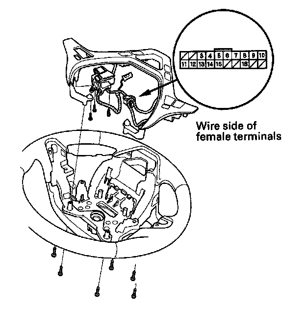
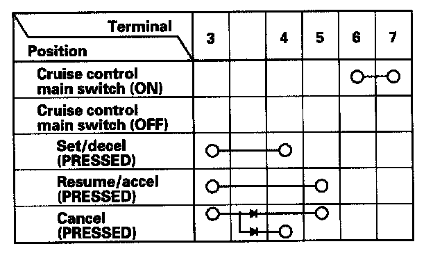

Cruise Control Switch: Service and Repair
Cruise Control Combination Switch Test/ReplacementSRS components are located in this area. Review the SRS component locations and the precautions and procedures in the SRS before doing repairs or service.
1. Remove the driver's airbag.
2. Remove the steering wheel.

3. Remove the six screws, then remove the cruise control combination switch.

4. Check for continuity between the terminals in each switch position according to the table.
- If there is continuity, and it matches the table, but switch failure occurred on the cruise control input test, check and repair the wire harness on the switch circuit.
- If there is no continuity in one or both positions, replace the switch.